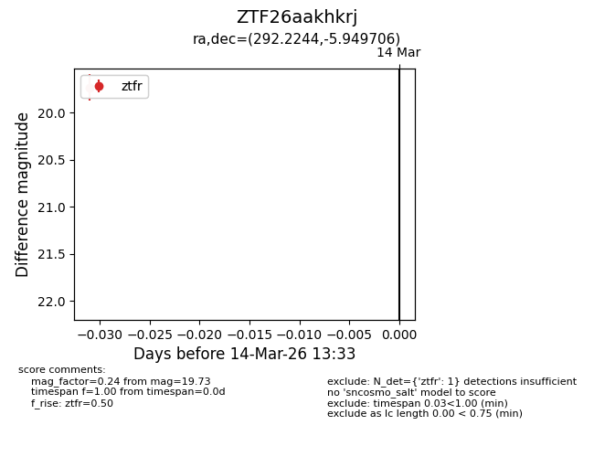
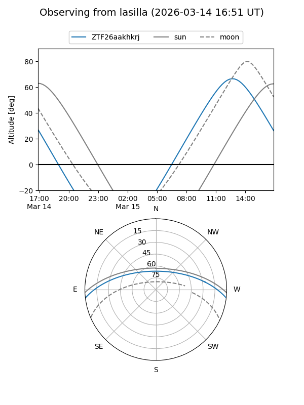
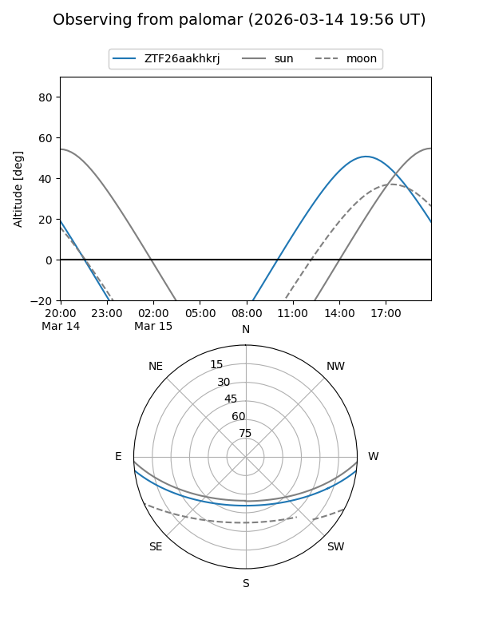

ZTF26aakhkrj
Target ZTF26aakhkrj at 2026-03-14 13:35
Aliases and brokers:
FINK: link
Lasair: link
ALeRCE: link
alt names
ZTF26aakhkrj (ztf,fink_ztf)
Coordinates:
equatorial (ra, dec) = 292.2244,-5.94971
equatorial (HMS+DMS) = 19:28:53.85,-05:56:58.94
galactic (l, b) = (31.8547,-11.02898)
Flags:
Photometry:
last ztfr=19.73
1 ztfr detections
Lightcurve

Visibility


Additional plots